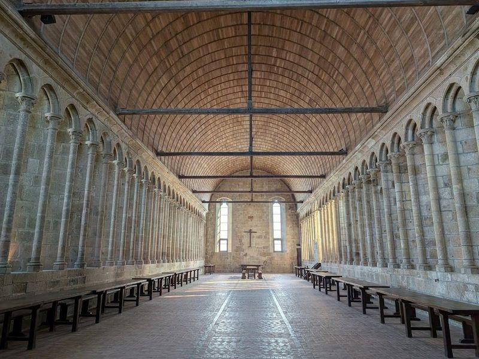
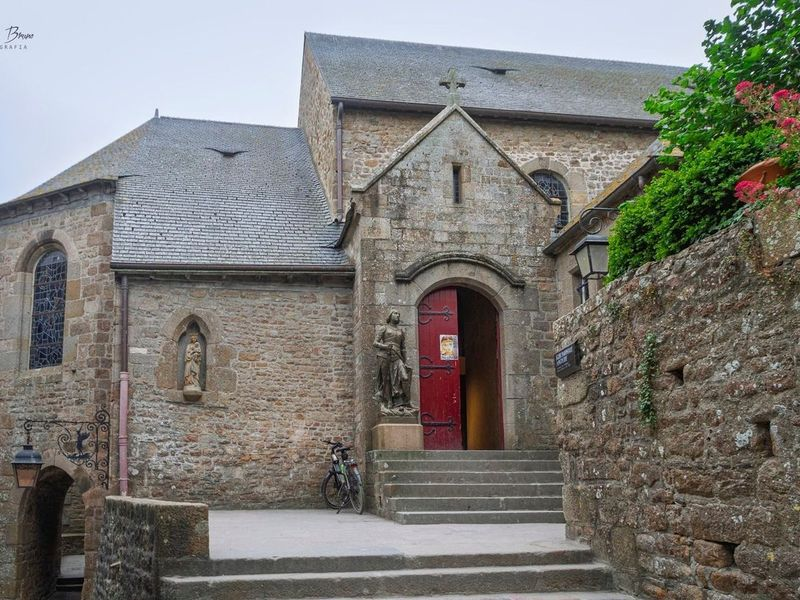
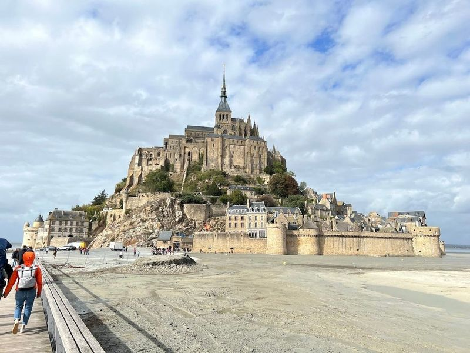
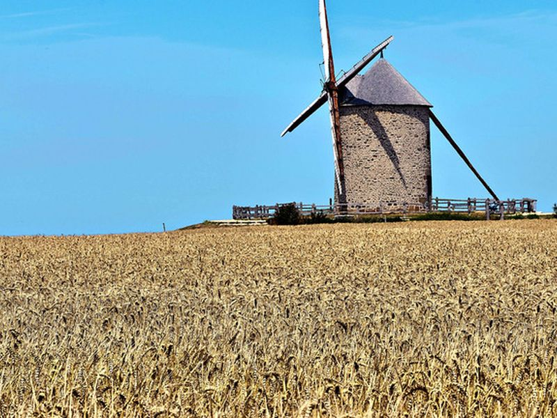
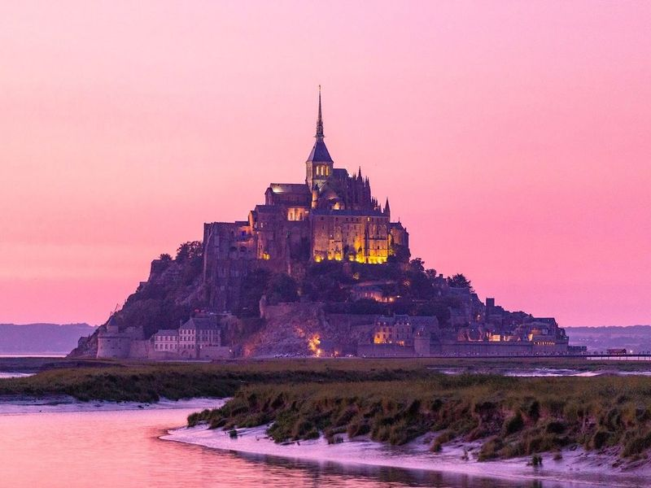
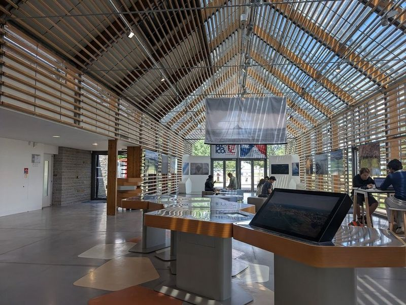
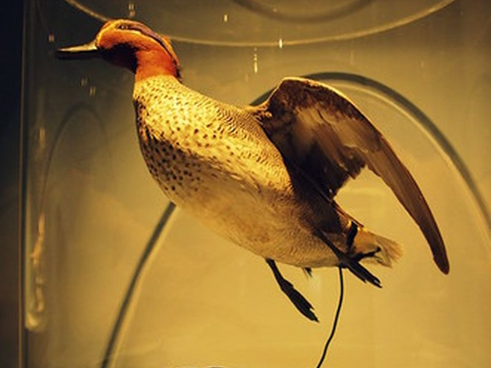

Explore Mont Saint-Michel
A Brief History
Mont Saint-Michel began as a rocky tidal island dedicated to the archangel Michael after a reported vision in 708, with Benedictine monks building the abbey that crowns the mount from the eleventh century. Pilgrims crossed dangerous sands at low tide to reach a shrine that Norman dukes and French kings endowed through the Middle Ages. Prison use after the Revolution gave way to restoration and, in the twenty-first century, to a causeway redesign that lets the bay's tides once again isolate the monument.
Attractions Map
Top Sights & Activities

Mont-Saint-Michel Abbey
The Abbey of Mont Saint-Michel is a example of Gothic architecture, with its towering spires reaching 155 meters above sea level. The 'La Merveille' section is a remarkable display of medieval artistry, and the challenges of transporting building materials across the Bay of Saint-Michel make its construction even more impressive.

Church of Saint-Pierre - Le Mont-Saint-Michel
Located on the Grande Rue, on the way up to the Abbey at Le Mont-Saint-Michel, is the Church of Saint-Pierre. This hidden gem is often overlooked by travellers but holds significant historical and cultural value. Founded in the 8th century by Saint Aubert, it serves as a burial place with a cemetery located on its south side. The church features Romanesque pillars and wooden statues from the 17th century.

Tour du Nord
Tour du Nord, located in the Normandy region, offers views and access to the abbey. travellers can enjoy vistas and explore the 13th-century North Tower for a unique perspective on the tides. The northeast tower provides great views of the tidal area and mainland. While it's a bit of a walk from the car park, it's worth it to experience this grand and massive site with its many restaurants and hotels.

Moulin de Moidrey
A historic windmill located near Mont Saint-Michel. The site is catalogued as a tourist attraction. The site is catalogued as a tourist attraction. The site is catalogued as a tourist attraction. Moulin de Moidrey is listed among principal sites for Mont Saint-Michel within France.

Barrage du Mont-Saint-Michel
Barrage du Mont Saint Michel offers three paths leading to the Place du Barrage, providing a 30-minute walking trip. It's a great spot for capturing shots of Mont Saint Michel with the waterway in the center. The location is ideal for long exposure night photography, especially from the raised section of the barrier at the back. travellers recommend visiting during sunrise or sunset for picturesque views and colors.

Tourist Information Centre
The Tourist Information Centre at Mont Saint-Michel offers a range of services and information for travellers. inquire about guided tours of the mudflats, check tide charts for safe exploration, and learn about ongoing construction projects such as the demolition of the dam. The center also provides amenities like toilets, brochures, and 3D video presentations of the abbey. travellers appreciate the helpful staff, clean facilities, and informative displays.

Écomusée de la Baie du Mont-Saint-Michel
An eco-museum that showcases the natural and cultural heritage of the Mont-Saint-Michel bay area. The site is catalogued as a church. The site is catalogued as a church. The site is catalogued as a church. Écomusée de la Baie du Mont-Saint-Michel is listed among principal sites for Mont Saint-Michel within France.